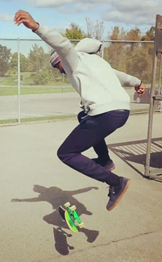
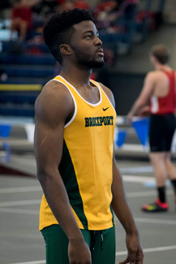

My Story
I was born Francis Uwanekwu Okereke in White Plains, NY on a snowy first of November. My parents brought me back to our home at the time in the Bronx. At home, I was met for the first time by my three sisters and about 3 years later my brother was born. I grew up in a pretty big family with many different personalities. I was the laid-back kid that was friends with almost everyone his grade. I loved sports and I’ll have you know that as an 11-year-old I batted .900 in Astor little league. Okay, maybe not .900, but I was a stud. The next year I moved and stopped playing baseball. I stopped mainly because, my new home in Middletown was in a pretty rural place. My parents had to commute over an hour and a half to get to work in NYC. Therefore, there was no one available to drive me to games and from practice. I started to pick up different hobbies I could do at or close to home. To keep myself busy I played on the I played video games, basketball, skateboarded and also played on the computer.
I spent time learning about how computers work and the different things they could do. It fascinated me that they were able to do so much despite being so small. In time, I basically became my houses’ IT support Specialist. I fixed all the broken stuff, set up our home network and our computers etc. One of my favorite things to do while on my computer was to create and post videos on YouTube. If you like basketball, bad skateboarding, high jump and bears digging through trash, you might want to see it. I currently have over 800,000 views. I used to love creating basketball and skateboard edits. (Despite the fact that my skating was pretty brutal at the time.) As a result, I ended up becoming pretty skilled with Sony Vegas, Photoshop and other editing software. I continued this hobby until I got to college. I ended up stopping because I had less time to work on video/photo edits.
I started college as a business major with no idea of what I wanted to do with my life. It took me a couple semesters but, I found my way and switched my major to Computer Science. I was also a student-athlete in college. I participated in track and field as a jumper. It was a great experience and it taught me many lessons as well as being extremely fun and demanding. If you want to read more about my experience, this is an interview I had for my colleges' newspaper. You can also look at my stats here. Anyway, back to switching my major; I took a Web design and development course and talked to some CS professors and after some deliberation I pretty much knew that I wanted to study computer science. Fast-forward to today and I am now a job seeker with a passion for web/software development and really anything Tech related.